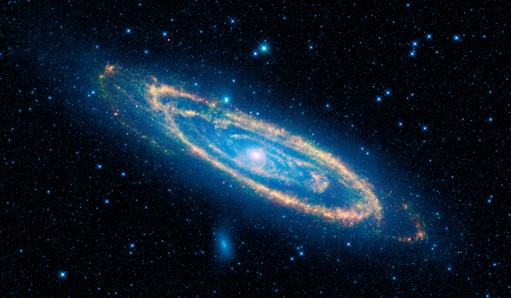

The creation of the universe is explained by astrophysicists in a widely accepted phenomenon, popularly known as the ‘Big Bang’. It is supported by observational and experimental data gathered by astronomers and astrophysicists for decades. According to the ‘Big Bang’, the whole universe was initially one big mass (Primary Nebula). Then there was a ‘Big Bang’ (Secondary Separation) which resulted in the formation of Galaxies. These then divided to form stars, planets, the sun, the moon, etc. The origin of the universe was unique and the probability of it occurring by ‘chance’ is zero. The Qur’aan contains the following verse, regarding the origin of the universe:
"Do not the Unbelievers see That the heavens and the earth Were joined together (as one Unit of Creation), before We clove them asunder?” [Al-Qur’aan 21:30]
“Moreover, He Comprehended In His design the sky, And it had been (as) smoke: He said to it And to the earth: ‘Come ye together, Willingly or unwillingly.’ They said: ‘We do come (Together), in willing obedience.’” [Al-Qur’aan 41:11]
Again, this fact is a corollary to the ‘Big Bang’ and was not known to the Arabs during the time of Prophet Muhammad (pbuh). What then, could have been the source of this knowledge?
Merging here means that the night slowly and gradually changes to day and vice versa. This phenomenon can only take place if the earth is spherical. If the earth was flat, there would have been a sudden change from night to day and from day to night.
The following verse also alludes to the spherical shape of the earth: “He created the heavens And the earth In true (proportions): He makes the Night Overlap the Day, and the Day Overlap the Night.” [Al-Qur’aan 39:5] The Arabic word used here is Kawwara meaning ‘to overlap’ or ‘to coil’– the way a turban is wound around the head. The overlapping or coiling of the day and night can only take place if the earth is spherical. The earth is not exactly round like a ball, but geo-spherical i.e. it is flattened at the poles. The following verse contains a description of the earth’s shape:
“And the earth, moreover, Hath He made egg shaped.” 2 [Al-Qur’aan 79:30]
The Arabic word for egg here is dahaha, which means an ostrich-egg. The shape of an ostrich-egg resembles the geo-spherical shape of the earth. Thus the Qur’aan correctly describes the shape of the earth, though the prevalent notion when the Qur’aan was revealed was that the earth is flat.
In 1609, the German scientist Yohannus Keppler published the ‘Astronomia Nova’. In this he concluded that not only do the planets move in elliptical orbits around the sun, they also rotate upon their axes at irregular speeds. With this knowledge it became possible for European scientists to explain correctly many of the mechanisms of the solar system including the sequence of night and day.
After these discoveries, it was thought that the Sun was stationary and did not rotate about its axis like the Earth. I remember having studied this fallacy from Geography books during my school days. Consider the following Qur’aanic verse: “It is He Who created The Night and the Day, And the sun and the moon: All (the celestial bodies) Swim along, each in its Rounded course.” [Al-Qur’aan 21:33]
The Arabic word used in the above verse is yasbahûn . The word yasbahûn is derived from the word sabaha. It carries with it the idea of motion that comes from any moving body. If you use the word for a man on the ground, it would not mean that he is rolling but would mean he is walking or running. If you use the word for a man in water it would not mean that he is floating but would mean that he is swimming.
Similarly, if you use the word yasbah for a celestial body such as the sun it would not mean that it is only flying through space but would mean that it is also rotating as it goes through space. Most of the school textbooks have incorporated the fact that the sun rotates about its axis. The rotation of the sun about its own axis can be proved with the help of an equipment that projects the image of the sun on the table top so that one can examine the image of the sun without being blinded. It is noticed that the sun has spots which complete a circular motion once every 25 days i.e. the sun takes approximately 25 days to rotate around its axis.
In fact, the sun travels through space at roughly 150 miles per second, and takes about 200 million years to complete one revolution around the center of our Milky Way Galaxy.
“It is not permitted To the Sun to catch up The Moon, nor can The Night outstrip the Day: Each (just) swims along In (its own) orbit (According to Law).” [Al-Qur’aan 36:40]
This verse mentions an essential fact discovered by modern astronomy, i.e. the existence of the individual orbits of the Sun and the Moon, and their journey through space with their own motion. The ‘fixed place’ towards, which the sun travels, carrying with it the solar system, has been located exactly by modern astronomy. It has been given a name, the Solar Apex. The solar system is indeed moving in space towards a point situated in the constellation of Hercules (alpha Layer) whose exact location is firmly established.
The moon rotates around its axis in the same duration that it takes to revolve around the earth. It takes approximately 29½ days to complete one rotation. One cannot help but be amazed at the scientific accuracy of the Qur’aanic verses. Should we not ponder over the question: “What was the source of knowledge contained in the Qur’aan?”
“And the Sun Runs its course For a period determined For it; that is The decree of (Him) The exalted in Might, The All-Knowing.” [Al-Qur’aan 36:38] 3
The Arabic word used here is mustaqarr, which means a place or time that is determined. Thus the Qur’aan says that the sun runs towards a determined place, and will do so only up to a pre-determined period of time – meaning that it will end or extinguish.
“He Who created the heavens And the earth and all That is between.” [Al-Qur’aan 25:59]
It would be ridiculous, for anybody to even suggest that the presence of interstellar galactic material was known 1400 years ago.
For it is We Who create The vastness of Space.” [Al-Qur’aan 51:47]
The Arabic word mûsi‘ûn is correctly translated as ‘expanding it’, and it refers to the creation of the expanding vastness of the universe. Stephen Hawking, in his book, ‘A Brief History of Time’, says, “The discovery that the universe is expanding was one of the great intellectual revolutions of the 20th century.”
The Qur’aan mentioned the expansion of the universe, before man even learnt to build a telescope! Some may say that the presence of astronomical facts in the Qur’aan is not surprising since the Arabs were advanced in the field of astronomy. They are correct in acknowledging the advancement of the Arabs in the field of astronomy. However they fail to realize that the Qur’aan was revealed centuries before the Arabs excelled in astronomy. Moreover many of the scientific facts mentioned above regarding astronomy, such as the origin of the universe with a Big Bang, were not known to the Arabs even at the peak of their scientific advancement. The scientific facts mentioned in the Qur’aan are therefore not due to the Arabs’ advancement in astronomy. Indeed, the reverse is true. The Arabs advanced in astronomy, because astronomy occupies a place in the Qur’aan.
“Blessed is He Who made Constellations in the skies, And placed therein a Lamp And a Moon giving light.” [Al-Qur’aan 25:61]
The Arabic word for the sun in the Qur’aan, is shams. It is referred to as siraaj, which means a ‘torch’ or as wahhaaj which means ‘a blazing lamp’ or as diya which means ‘shining glory’. All three descriptions are appropriate to the sun, since it generates intense heat and light by its internal combustion. The Arabic word for the moon is qamar and it is described in the Qur’aan as muneer, which is a body that gives nur i.e. light. Again, the Qur’aanic description matches perfectly with the true nature of the moon, which does not give off light itself and is an inert body that reflects the light of the sun. Not once in the Qur’aan, is the moon mentioned as siraaj, wahhaaj or diya or the sun as nur or muneer. This implies that the Qur’aan recognizes the difference between the nature of sunlight and moonlight.
Narrated 'Abdullah bin 'Amr: A person asked Allah's Apostle . "What (sort of) deeds in or (what qualities of) Islam are good?" He replied, "To feed (the poor) and greet those whom you know and those whom you don't know." (Book #2, Hadith #27)
Narrated 'Abdullah bin 'Amr: A person asked Allah's Apostle . "What (sort of) deeds in or (what qualities of) Islam are good?" He replied, "To feed (the poor) and greet those whom you know and those whom you don't know." (Book #2, Hadith #27)
Narrated 'Abdullah bin 'Amr: A person asked Allah's Apostle . "What (sort of) deeds in or (what qualities of) Islam are good?" He replied, "To feed (the poor) and greet those whom you know and those whom you don't know." (Book #2, Hadith #27)
Narrated 'Abdullah bin 'Amr: A person asked Allah's Apostle . "What (sort of) deeds in or (what qualities of) Islam are good?" He replied, "To feed (the poor) and greet those whom you know and those whom you don't know." (Book #2, Hadith #27)